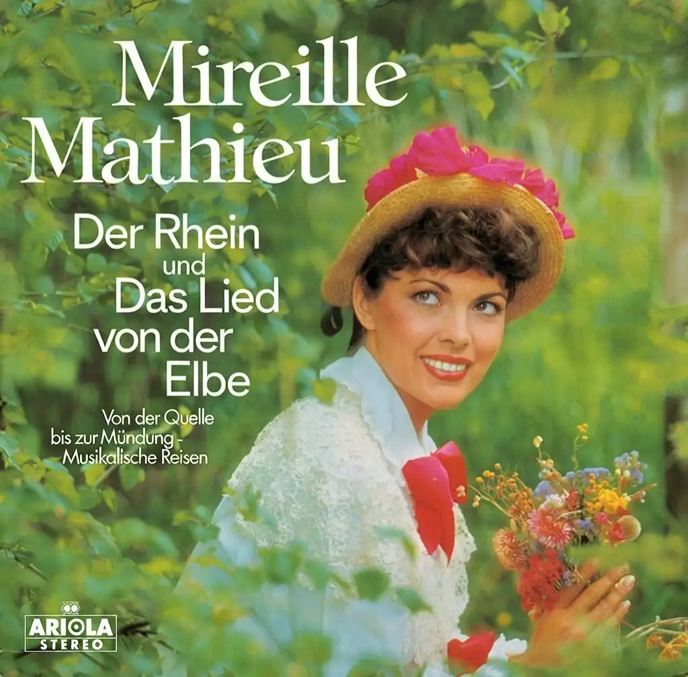

Mireille Mathieu

Strassburg
Straßburg lag im Sonnenschein
Und ich sah nur ihn allein
Martin...
Weißt du, wie verliebt wir sind,
Sagte er im Sommerwind
Martin...
Ich denke immer an die Zeit
Und keine Stunde tut mir leid
Einmal wird er vor mir stehen
Und ich träume vom Wiedersehen
Mit Martin, Martin,
Denn seine Liebe war so schön
Straßburg liegt im Sonnenschein,
Aber ich bin so allein
Martin...
Durch die alten Gassen zieht
Immer noch ein Liebeslied
Martin...
Ich denke immer an die Zeit
Und keine Stunde tut mir leid
Einmal wird er vor mir stehen
Und ich träume vom Wiedersehen
Mit Martin, Martin.
All meine Träume heißen
Martin, Martin,
Denn seine Liebe war so schön.